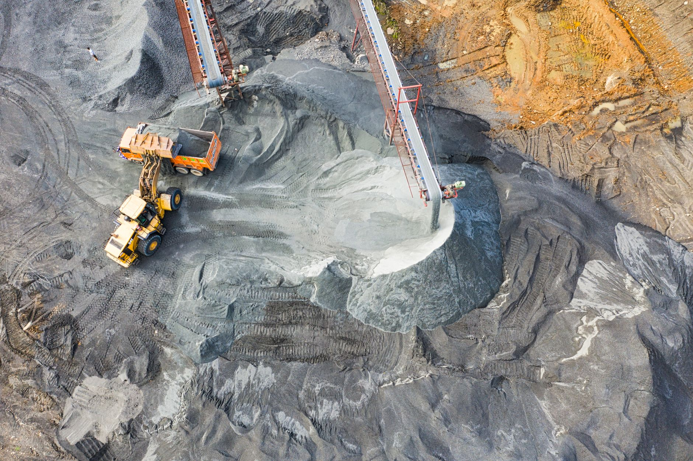

워싱턴 건너 실리콘밸리·브라질 택한 한국, 실리 외교 전환점

[자료사진] 기사와 무관한 이미지입니다.
카네기 국제평화기금(Carnegie Endowment for International Peace)은 한국 대통령이 전통적 워싱턴 DC 순방 대신 실리콘밸리(빅테크 투자 유치)와 브라질리아(핵심광물 협력)를 우선 방문한 것은 한국 외교 우선순위가 안보 동맹에서 산업 공급망으로 이동하고 있음을 보여주는 전략적 시그널이라고 분석했다.
브라질은 세계 리튬 매장량 5위(약 2,200만 톤)이자 니오븀 최대 생산국으로 전 세계 공급의 약 88%를 차지한다. 니오븀은 고강도 철강·초전도 합금·차세대 배터리 음극재 소재로 쓰이며 중국이 통제하지 않는 전략광물 가운데 희귀성이 가장 높은 품목 중 하나다.
실리콘밸리 방문 의제에는 구글·엔비디아 등 빅테크의 한국 반도체 투자 유치가 포함됐으며, 한국 정부의 5개년 반도체 생산 2배 확대 계획(2026~2030)과 연계된 외자 유치 행보다. 미국 자본이 한국 팹에 직접 투입되면 공급망 의존 관계가 역전되며 한국의 협상력이 높아진다.
미국 아시아리서치국(NBR)은 별도 보고서에서 한국의 핵심광물 조달 전략이 정제 역량 미흡·동맹국 장기계약 부재·중국 의존 집중이라는 세 가지 구조적 압박에 직면해 있다고 경고한 바 있다. 브라질 루트 개척은 이 세 압박 중 '중국 의존 집중' 항목을 직접 공략하는 대응이다.
이번 방문 순서는 한국이 정치 선언보다 자본·소재 확보 라인을 먼저 다지겠다는 전략 전환을 대외에 가시화한 것이다. 미중 어느 쪽에도 전략적 공간을 잃지 않으려면 독자적인 기술자본과 비중국 광물 공급망이 필수 전제조건이다.
브라질 니오븀·리튬 협력이 장기 구매계약으로 발전하면, 포스코홀딩스가 아르헨티나(리튬)에 이어 브라질(니오븀)까지 남미 소재 축을 완성하게 된다. 한-중앙아 5국 광물 협약(크롬·우라늄)과 결합하면 한국 소재 조달 구조에서 중국 비중이 의미 있는 수준으로 하락하는 첫 조건이 갖춰진다.
포스코홀딩스·에코프로비엠: 브라질 니오븀 협력 공식화 시 배터리 음극재 소재 조달 원가 구조가 5~10년 단위로 안정화된다. 포스코는 이미 아르헨티나 리튬 염호에 투자 중이며 브라질은 두 번째 남미 광물 축이 된다.
미국 빅테크(구글·엔비디아): 한국 팹에 직접 자본을 투입하면 AI 인프라 공급망의 지리적 다변화와 세제 혜택을 동시에 확보할 수 있다. 한국 정부의 세액공제 확대(현행 최대 25%)는 외자 유치 레버리지로 작동한다.
중국: 한국이 브라질·중앙아 광물 루트를 동시에 강화할수록 갈륨·게르마늄 수출통제의 레버리지가 중장기적으로 희석된다. 대체 공급망이 가시화되는 시점부터 중국의 광물 무기화 효과는 가격 충격 단계에 머무르지 못한다.
전통 대미 정치 외교 채널: 산업 실익 중심의 빅테크·자원국 직접 채널이 성과를 내면 워싱턴 로비에 집중해온 한국 외교 자원 배분이 재편된다.
투자자는 포스코홀딩스·에코프로비엠 등 남미 광물 루트 수혜 기업에 주목해야 한다. 브라질 니오븀 협력이 MOU를 넘어 장기 공급계약으로 전환되는 시점이 주가 재평가 트리거다.
기업 구매담당자는 중국산 리튬·특수금속 의존도를 정량화하고 브라질·아르헨티나·카자흐스탄 루트를 통한 이중 소싱 포트폴리오를 설계할 시점이다. 국내 소재 기업의 남미 장기계약 체결 경험이 전무한 수준이므로 컨소시엄 방식 진입이 현실적 선택지다.
실제 조달 현장에서는 — 브라질·아르헨티나산 리튬과 니오븀의 국내 수입 계약이 아직 단기·소량 기반이며 장기 공급계약 실적이 있는 한국 기업이 거의 없다. 브라질 공급자들은 단일 대형 계약을 선호하기 때문에 중소기업 단독 진입은 사실상 불가능하고 정부 지원 컨소시엄 또는 대기업 주도 공동 계약 구조가 필수다. 이번 정상 방문을 계기로 산업부·KOTRA 차원의 장기계약 지원 프로그램이 신설될 경우 첫 번째 입찰 타이밍을 선점하는 것이 핵심이다.
이 포스팅은 쿠팡 파트너스 활동의 일환으로 수수료를 제공받습니다.